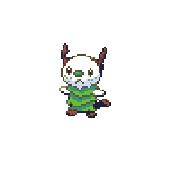
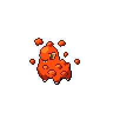
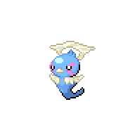
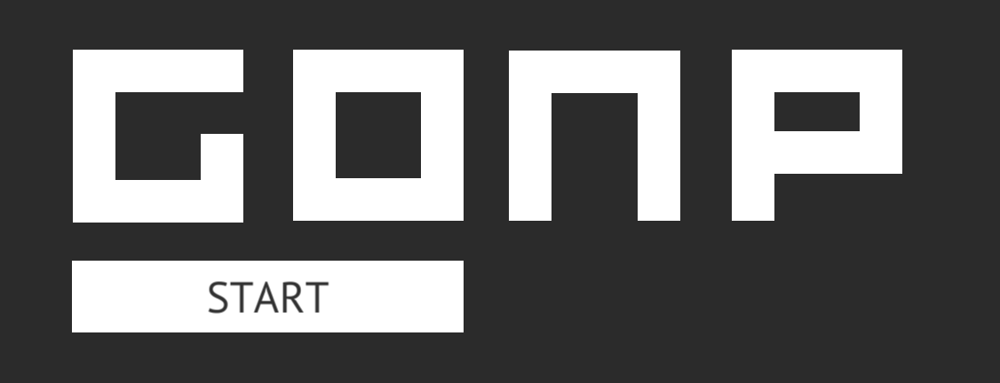

files in folders
Here are some of the projects I worked on and I'm proud enough of them to display here. More to come!

Text Color Predictor

This was really fun but also a pain to work on. NN with one hidden layer containing 5 neurons in it that takes 3 inputs (RGB values of a random color) and decides whether text over that color should be black or white. Uses back propagation. Written from scratch in JS (there's also a PY ver).
Try it | GitHub
Brobotto

What and why is this? It's a bot for Discord. Has some cool functionalities like sending random images of Etika or giving you the weather or sending random pokemon. More in the readme. Also replies from time to time. Closest thing I've got to a son. Hosted on a RasPi on my desk. I think he has personality!
GitHub | Server Invite | Article I wrote on him
That's about it for now, but I have more works in progress!
I have many more things I've done! But I feel like I should keep 'em separate. Here's some of things I've done on in the past / are works in progress.
Untitled Pokemon Fangame
This is very fresh, so I don't have much I can (want to) show. It's gonna be a Pokemon fangame (not a rom hack) for which I will use Pokemon Essentials. I don't want it o just be some random RPG Maker game though, so to make it unique I'll try to code many new features. Along with that, it'll also include a completely new roster of mons, designed from the ground up by me. I think by doing that it'll have more character and I'll also get a chance to make something unique both form a competitive and a creative point of view.
Here's a only few sprites I made so far, I don't wanna overshare yet ;)

With this I'm learning how to draw pixel art, but also balancing competitive aspects of the game. Not to mention using an entirely new engine :P

Boy, this is near and dear to my heart. It's the first game I've ever made in Unity! I had so much fun learning everything I needed to create it. It was also the first time I came across coroutines, which were a challenge but still very amusing to mess with.
Check it out here!
(there's also more of my thoughts about it under the actual game)
Inktober 2018 | Goretober
AH, INKTOBER, THE REAL CELEBRATION OF OCTOBER. 2018 was the only time I actually completed it. I chose a harder theme, gore (don't worry though, nothing graphic), for the sake of making it harder and getting out of my drawing comfort zone, but it came out REAL cool. I'm proud of the final product, but even prouder that you can see actual improvement with each new drawing. Can't wait for next year's Inktober!
Check out the gallery!
<<< go back